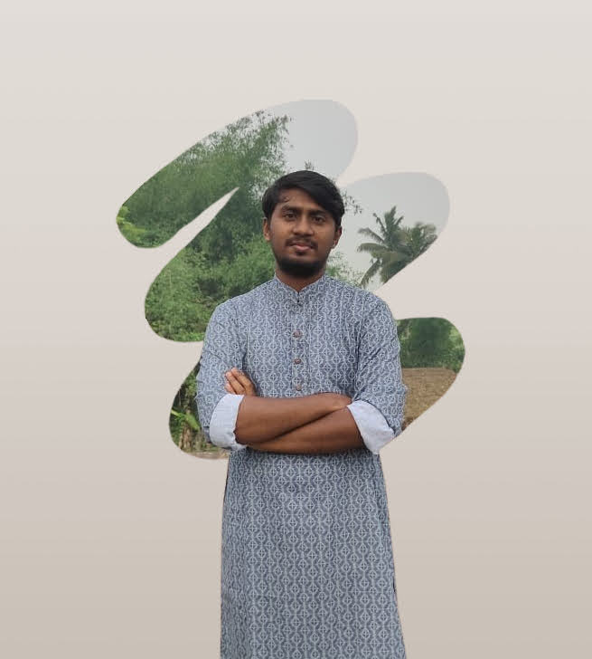

Hi, I'm Ariful Mondal.
I turn messy enterprise numbers into interactive dashboards, automated pipelines and machine-learning models that guide real decisions.

Data Analysis
Data Science
Artificial Intelligence
About
Analysis first, models second, always tied to a decision.
I am a data professional focused on converting messy enterprise numbers into interactive dashboards, automated intelligence, and clear operational strategies. My approach bridges deep mathematical analysis with real-world execution, helping organizations unlock key patterns and minimize revenue leakage.
With hands-on experience in supply chain and professional operations, I build complete descriptive pipelines, from raw business data to structured SQL databases to dynamic Power BI reports that track key metrics at a glance.
I extend those insights into data science and predictive analytics using Python, NumPy and Pandas to write automated clean-up logic and engineer high-performance machine learning models.
Projects
Filter by discipline. Hover a card to inspect it.
No projects match that search. Try a tool name like “Power BI” or “Keras”.
CivicCura-AI
AI-Powered Offline Retinal Diagnostic Network for Primary Screening
// problem
Diabetic retinopathy leads to preventable blindness, but 80%+ of cases occur in low-resource settings lacking $10,000+ fundus cameras, stable internet, and specialized ophthalmologists.
// solution
An offline-first AI diagnostic system running locally on standard PCs. Paired with low-cost smartphone optical adapters (~$30), it delivers zero-latency primary screening, visual risk alerts, and downloadable PDF medical reports with no cloud or internet.
// how it works (click a step)
Interactive Lab: Data Runner
Dodge the noise, collect the signal. Hold jump for higher leaps, double jump mid-air, grab AI gems for a shield, press P to pause.
SPACE / TAP to start